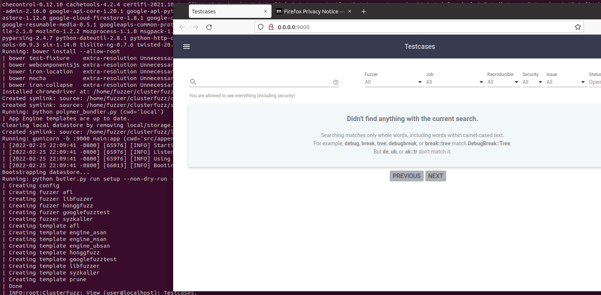
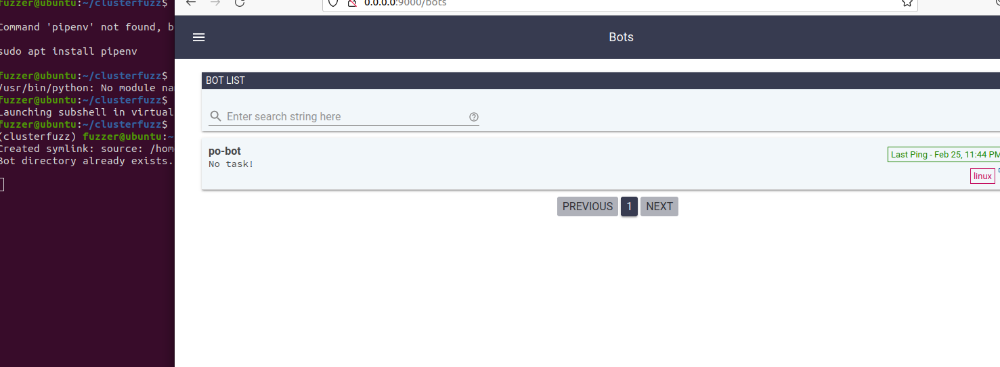
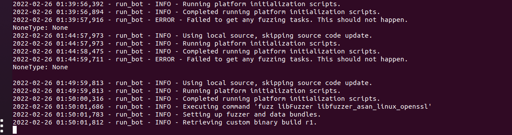
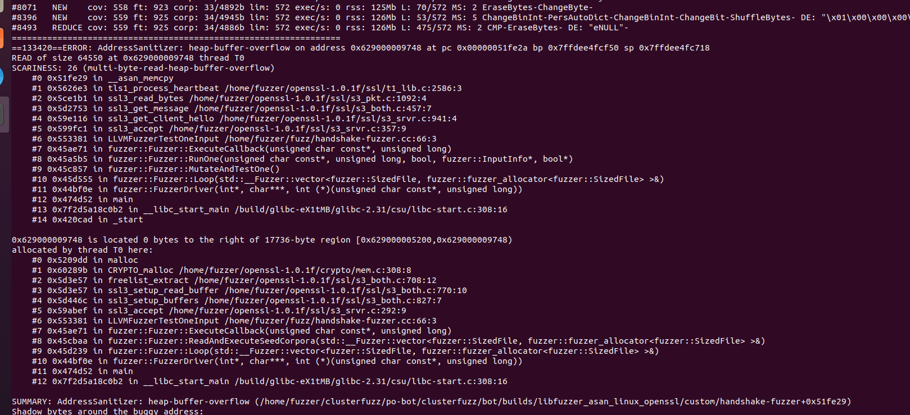
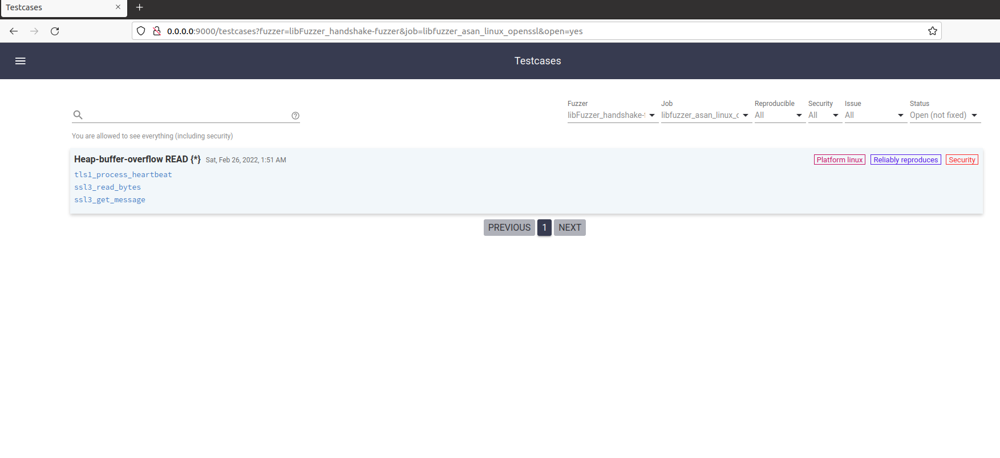

clusterfuzz踩坑实录
Getting started
设置环境可参考https://google.github.io/clusterfuzz/getting-started/prerequisites/
我用的ClusterFuzz 版本位v2.5.6
Running a local server
You can start a local server by running the following command:
1 | |
错误：
1 | |
到出错模块的目录看了下markupsafe的版本__version__ = “2.1.0”，再看其官网的公告https://markupsafe.palletsprojects.com/en/2.1.x/changes/#version-2-1-0，表示：
- Remove
soft_unicode, which was previously deprecated. Usesoft_strinstead. #261
那就修改一下clusterfuzz/src/appengine/third_party/jinja2/filters.py这个文件，将
1 | |
改为
1 | |
发现修改还不行，一运行butler.py就会安装Jinja2==2.11.3，看了下https://github.com/pallets/jinja，最新版已经解决了该问题。
那就把clusterfuzz/src/appengine/requirements.txt版本改到最新
1 | |
这个解决了，又有新的报错：
1 | |
按照网友的描述，把flask升到新版，参考https://stackoverflow.com/questions/71189819/python-docker-importerror-cannot-import-name-json-from-itsdangerous
成功啦~

Running a local bot instance
您可以通过运行以下命令在本地实例中运行ClusterFuzz机器人:
1 | |
执行成功后，可在前一步的管理员界面看到机器人状态。

Viewing logs
您可以通过运行以下命令查看本地实例上的日志:
1 | |
Setting up fuzzing
libFuzzer and AFL
Prerequisites
Compiler
LibFuzzer和AFL均需要使用Clang编译器进行代码插装. 在本文档中, 我们采用的版本为Clang 6.0及更高. 但为了更好的使用ClusterFuzz, 我们建议使用Clang最新稳定版本. 要获得Clang最新稳定版本，您可以从快照页面（Windows）下载它，或按照apt页 (Ubuntu / Debian)上的说明进行操作。 否则，您可以从发布页面下载Clang发行版，或使用包管理器安装一个Clang发行版。 我们将在示例中将这些编译器称为$CC和$CXX。 在环境中进行设置，以便您可以复制并粘贴示例命令：
1 | |
比如我本地是
1 | |
Platform
Linux, macOS和Windows均支持libFuzzer. 对于Windows平台, 您需要在cmd.exe中运行命令, 并且需要9.0或更高版本的Clang支持, 您可以从LLVM Snapshot Builds页面下载合适的版本.
AFL则仅支持在Linux平台上运行.
Builds
libFuzzer
LibFuzzer的目标十分容易进行构建. 只需要通过选项-fsanitize=fuzzer编译链接fuzz target和例如AddressSanitizer这样的sanitizer (-fsanitize=address)即可.
1 | |
libFuzzer构建包是包含您要Fuzz的目标及其依赖项的Zip归档文件.
AFL
ClusterFuzz支持使用AFL ++来fuzzing libFuzzer的harness功能（LLVMFuzzerTestOneInput）。 AFL ++必须与AddressSanitizer一起使用。 要为AFL构建fuzz目标，请运行我们的script，该脚本下载并构建AFL和FuzzingEngine.a，您可以将目标链接到该库以使其与AFL兼容。 然后使用-fsanitize-coverage = trace-pc-guard和-fsanitize = address编译并链接目标。
注意:由于将不会启用CMPLOG和COMPCOV之类的高级模糊功能，因此不会充分利用AFL ++。 因此，建议使用oss-fuzz代替创建（多个）模糊测试软件包，因为每个软件包都带有随机选项。
1 | |
AFL构建是zip文件，其中包含您要fuzz的任何目标，它们的依赖关系以及AFL的依赖关系：afl-fuzz和afl-showmap（均由script构建）。
Finding Heartbleed
Prerequisites
假设您现在正在使用一台Linux bot. 查阅位于libFuzzer和AFL++文档里的编译器段落, 获取以下示例的可用编译器, 并确保设置好了CC和CXX环境变量.
Building a libFuzzer target for OpenSSL
运行以下命令构建一个用于OpenSSL的libFuzzer target.
1 | |
Uploading the fuzzer to ClusterFuzz
首先我们需要创建一个任务:
- 导航至Jobs页面.
- 来到”ADD NEW JOB”表单处.
- 依照以下内容填充任务信息:
- 填写“libfuzzer_asan_linux_openssl” 至 “Name”.
- 填写“LINUX” 至 “Platform”.
- 填写“libFuzzer” 至 “Select/modify fuzzers”.
- 填写“libfuzzer” 和 “engine_asan” 至 “Templates”.
- 填写
CORPUS_PRUNE = True至 “Environment String”.
- 选择 openssl-fuzzer-build.zip并上传为”Custom Build”.
- 使用”ADD”按钮将该Job添加至ClusterFuzz.
Fuzzing and seeing results
如果您遵照local ClusterFuzz教程配置好了本地的server和bot实例, 并且同时也没有其他任何fuzzing任务正在运行, 那么您接下来应该就能在bot logs处看到fuzz libFuzzer libfuzzer_asan_linux_openssl的字样. 这代表着ClusterFuzz正在对您构建的代码进行模糊测试.

不久后您就能在日志里看到崩溃栈信息以及字符串AddressSanitizer: heap-buffer-overflow.

如果您遵照的是教程production instance of ClusterFuzz, 那么您可以在Bots页面看到fuzz libFuzzer libfuzzer_asan_linux_openssl字样. 具体花费的时间取决于您可能承担的其他工作负荷.
随后, 您可以转到ClusterFuzz首页(或者Testcases页面), 您将会看到一个标题名为“Heap-buffer-overflow READ{*}”的测试用例. 这就是由ClusterFuzz发现的心脏滴血漏洞.

参考
https://google.github.io/clusterfuzz/
https://myfzy.top/2020/05/15/clusterfuzz%E8%B8%A9%E5%9D%91%E6%8C%87%E5%8D%97/
本博客所有文章除特别声明外，均采用 CC BY-SA 4.0 协议 ，转载请注明出处！